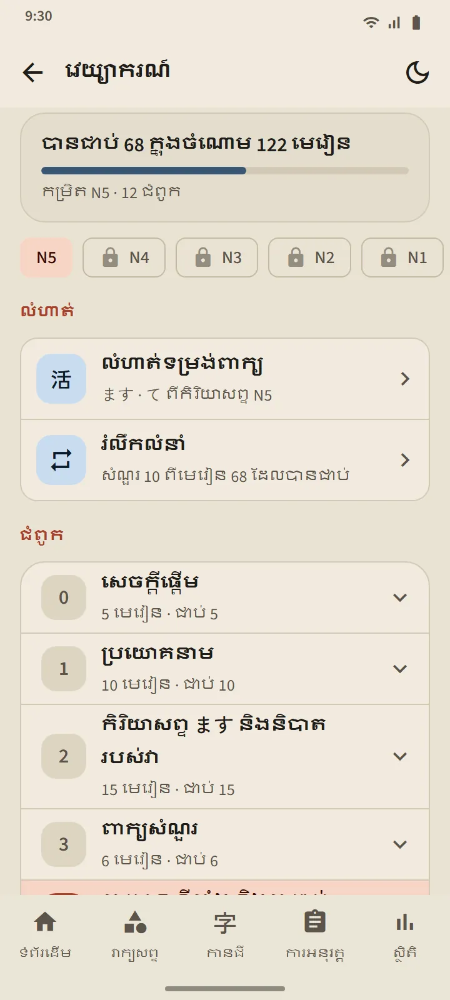
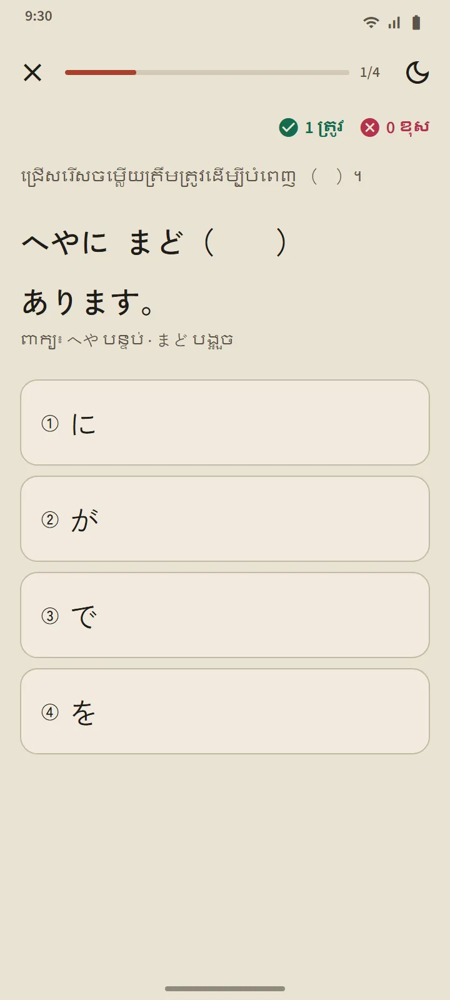
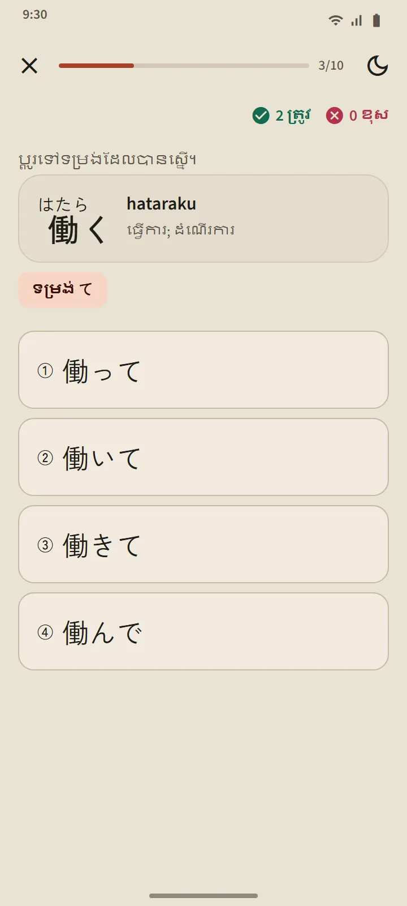
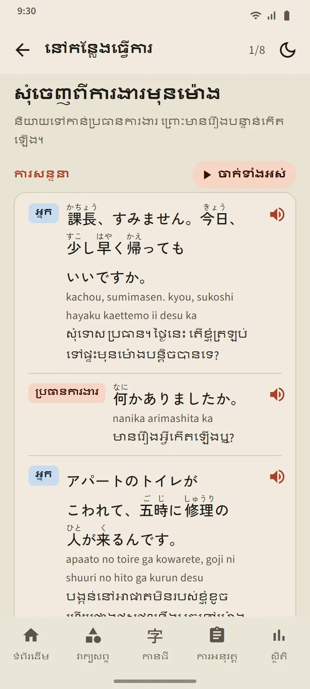

កម្រិតប្រាំ មេរៀន 268
ទំព័រវេយ្យាករណ៍បើកពីផ្នែក «មូលដ្ឋានភាសាជប៉ុន» នៃទំព័រដើម។ ឈីបនៅខាងលើប្ដូររវាង N5 N4 N3 N2 និង N1; ជំពូកពង្រីកនៅនឹងកន្លែង ហើយមេរៀននីមួយៗត្រូវបានសម្គាល់ថា មិនទាន់បើក បានអាន ឬបានប្រឡងជាប់លំហាត់។ N5 គ្របដណ្ដប់លំនាំទាំងអស់ក្នុងការប្រឡងសាកល្បង N5 ហើយ N3 ដល់ N1 គ្របដណ្ដប់លំនាំដែលត្រូវបានសួរក្នុងការប្រឡងសាកល្បងនៃកម្រិតទាំងនោះ។
| កម្រិត | មេរៀន | ការចូលប្រើ |
|---|---|---|
| N5 | 122 | ឥតគិតថ្លៃ |
| N4 | 56 | ឥតគិតថ្លៃ |
| N3 | 25 | Premium |
| N2 | 26 | Premium |
| N1 | 39 | Premium |

ទម្រង់នៃមេរៀនមួយ
មេរៀននីមួយៗមានការរៀបចំដូចគ្នា៖ ទម្រង់ប្រយោគ និងអត្ថន័យរបស់វា របៀបបង្កើត (រូបមន្ត ជាមួយពាក្យឧទាហរណ៍) ការពន្យល់ ឧទាហរណ៍ ដែលមានហ្វុរីហ្កាណា និងអាចស្តាប់បាន និង កុំច្រឡំ សម្រាប់ទម្រង់ប្រយោគដែលស្រដៀងគ្នា។ ប្រយោគជប៉ុនចុះបន្ទាត់តែត្រង់ចន្លោះឃ្លាប៉ុណ្ណោះ ដើម្បីឱ្យនៅតែងាយអានលើទូរស័ព្ទតូចៗ។
លំហាត់ដែលមានការពន្យល់
ប៊ូតុងនៅខាងក្រោមមេរៀនបើកលំហាត់ដែលមានបីទៅប្រាំសំណួរ។ ចម្លើយនីមួយៗមានការពន្យល់ ហើយមេរៀនមួយរាប់ថាជាប់ បើឆ្លើយខុសមិនលើសពីមួយសំណួរ ចំណែកមេរៀនដែលមិនទាន់ជាប់អាចធ្វើម្ដងទៀតបាន។ លទ្ធផលត្រូវបានកត់ត្រានៅលើទំព័រវេយ្យាករណ៍ និងក្នុងផ្ទាំង «ស្ថិតិ»។

លំហាត់ទម្រង់ពាក្យ និងរំលឹកលំនាំ
ផ្នែកលំហាត់នៃទំព័រវេយ្យាករណ៍មានលំហាត់ពីរ។ លំហាត់ទម្រង់ពាក្យ ប្ដូរកិរិយាសព្ទ N5 ទៅជាទម្រង់ ます て ない ទម្រង់វចនានុក្រម និង た; ទម្រង់នីមួយៗបើកបន្ទាប់ពីប្រឡងជាប់មេរៀនរបស់វា ហើយចម្លើយនីមួយៗពន្យល់ពីច្បាប់។ រំលឹកលំនាំ សួររហូតដល់ 10 សំណួរពីមេរៀនដែលបានប្រឡងជាប់ មេរៀនដែលយូរជាងគេមិនបានរំលឹកមកមុន។ ក្នុងការហ្វឹកហាត់ប្រឡង សំណួរវេយ្យាករណ៍ភ្ជាប់ទៅមេរៀនរបស់វាតាម «រៀនលំនាំនេះ»។

ឃ្លា និងការសន្ទនា
ការសន្ទនាខ្លីៗ 78 ក្នុងស្ថានភាព 13៖ ការណែនាំខ្លួន និងការស្វាគមន៍ ការជជែកប្រចាំថ្ងៃ នៅកន្លែងធ្វើការ ហាង ភោជនីយដ្ឋាន ស្ថានីយ មន្ទីរពេទ្យ និងឱសថស្ថាន ទូរសព្ទ ការិយាល័យរដ្ឋ ធនាគារ និងប្រៃសណីយ៍ ទីលំនៅ និងអ្នកជិតខាង គ្រាអាសន្ន និងព្រលានយន្តហោះ។ នីមួយៗមានឃ្លាសន្ទនាជាមួយហ្វូរីហ្គាណា រ៉ូម៉ាជី និងអត្ថន័យ ប៊ូតុង «ចាក់ទាំងអស់» ដែលអានដោយសំឡេងខុសៗគ្នាសម្រាប់អ្នកនិយាយម្នាក់ៗ ឃ្លាសំខាន់ៗ និងលំហាត់ខ្លី។ ការសន្ទនា 12 ដំបូងឥតគិតថ្លៃ។

ជាភាសារបស់អ្នក
ការពន្យល់ អត្ថន័យឧទាហរណ៍ ជម្រើសចម្លើយ និងការពន្យល់ចម្លើយមានជា 14 ភាសា៖ អង់គ្លេស ឥណ្ឌូណេស៊ី វៀតណាម ភូមា នេប៉ាល់ ថៃ ស៊ីនហាឡា ហ្វីលីពីន ហិណ្ឌូ បង់ក្លាដែស ម៉ុងហ្គោលី ខ្មែរ កូរ៉េ និងចិនអក្សរបុរាណ។ ប្រយោគជប៉ុន រូបមន្ត និងចម្លើយត្រឹមត្រូវដូចគ្នាក្នុងគ្រប់ភាសា។ មេរៀនត្រូវបានសរសេរសម្រាប់ TokuGo ហើយត្រូវបានត្រួតពិនិត្យ; ប្រភពបើកចំហប្រើតែសម្រាប់ផ្ទៀងផ្ទាត់ប៉ុណ្ណោះ។